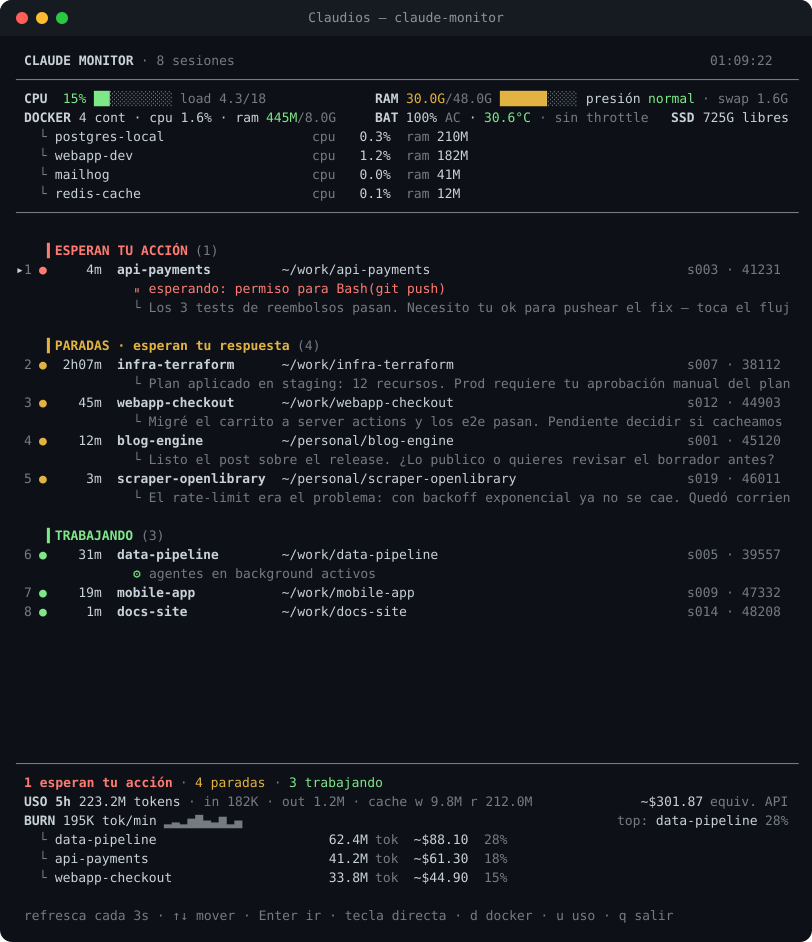

See every Claude Code session at a glance — who's working, who's blocked waiting for you — and jump to its terminal with one key. A zero-dependency TUI for macOS.
# Homebrew brew install rotorrest/tap/claude-monitor # or the installer (SHA256-verified) curl -fsSL https://raw.githubusercontent.com/rotorrest/claude-monitor/main/install.sh | bash

Blocked sessions first, then stopped ones — with Claude's last message so you know where it left off — then the ones still working.
Exact tab in Terminal/iTerm2 by tty; project window in Cursor, VS Code or Windsurf via the process tree. No other monitor jumps into editor terminals.
claude-notify turns Claude Code hooks into native macOS notifications — click one and land in that session's tab.
A session whose subagents are still writing shows as working, not idle. No more "wait, it wasn't done?"
CPU, RAM pressure, swap, disk, per-container Docker, battery temp and thermal throttling — can your Mac take one more session?
Pure Python stdlib. No telemetry. The only network call is a daily version check you can turn off. CI: bandit + CodeQL + stdlib guard.